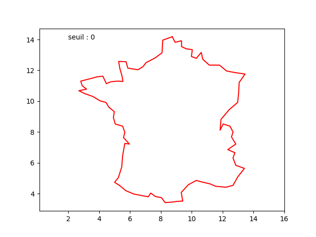
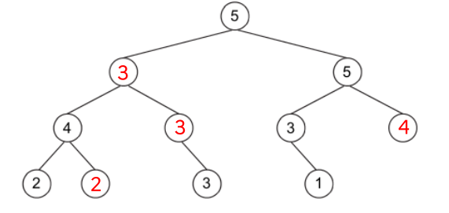

Correction du sujet 22-NSIJ2AS1 / Amérique du Sud J2 2022⚓︎

Exercice 1⚓︎
Correction Q1
1 2 3 4 5 6 7 8 9 | |
Correction Q2
La complexité est linéaire, car le nombre d'opérations est proportionnel à la taille du tableau t.
Correction Q3.a
Il suffit d'insérer la ligne dist = distance(obj, cible) en dessous de la boucle for et d'utiliser cette variable dist partout à la place de distance(obj, cible).
Correction Q3.b
La complexité (même répétée) d'une opération d'insertion d'un seul élément à sa bonne place dans une liste est moindre que celle d'un tri global. (NDLR : pas sûr)
Correction Q3.c
1 2 3 4 5 | |
Exercice 2⚓︎
Partie A⚓︎
Correction Q1
ifconfig
Correction Q2
DHCP (NDLR : question hors-programme)
Correction Q3
192.168.1.1
Correction Q4
C’est possible et cette adresse serait celle de la box vers Internet.
Correction Q5
Oui, car les adresses 192.168.x.x ne sont pas routées sur Internet.
Partie B⚓︎
Correction Q1
\(C = \dfrac{10^9}{50 \times 10^6}=\dfrac{1000}{50}=20\)
Correction Q2.a.

Correction Q2.b.
Suivant le protocole OSPF, il faut minimiser le coût total. Il faut pour cela suivre le chemin R1-R3-R6-R7-R4-R5-R8, pour un coût total de 80.
Correction Q3.c.
Pour que le protocole OSPF fasse passer par la liaison R1-R4, il faut que celle-ci ait un coût inférieur à la liaison actuelle R1-R3-R6-R7-R4, qui a un coût de 40.
Il faut donc que le coût R1-R4 soit inférieur à 40, ce qui sera le cas pour une bande passante supérieure à 25 Mb/s (car \(\dfrac{10^9}{25 \times 10^6}=40\))
Exercice 3⚓︎
Correction Q1
UPDATE ModeleVelo
SET Stock = 0
WHERE nomModele = "Bovelo";
Correction Q2
Il faut effectuer d'abord la requête 4 (qui déclare le nouveau fabricant, qui aura pour idFabricant 3127), puis la requête 2 (où on peut retrouver l'id 3127).
Correction Q3.a.
SELECT nomModele, idFabricant
FROM ModeleVelo
WHERE Stock = 0;
Correction Q3.b.
SELECT COUNT(numeroCommande)
FROM Commande
WHERE date >= '2022-01-01';
Correction Q3.c.
SELECT Fabricant.nom
FROM Fabricant
JOIN ModeleVelo ON Fabricant.idFabricant = ModeleVelo.idFabricant
WHERE ModeleVelo.Stock > 0
Correction Q4.
Cette requête permet d'obtenir le nom de tous les clients ayant acheté le modèle de vélo "Bovelo". Si certains l'ont acheté en plusieurs exemplaires, leur nom n'apparaitra qu'une seule fois.
Exercice 4⚓︎
Correction Q1.a.
from math import sqrt
Correction Q1.b.
1 2 | |
Correction Q2.
1 2 3 4 5 | |
Correction Q3.
1 2 3 4 5 6 7 8 9 10 11 12 13 | |
Correction Q4.
1 2 3 4 5 | |
Correction Q5.
1 2 3 4 5 6 7 8 9 10 11 | |
Mise en pratique de l'algorithme de Douglas-Peucker (exercice 4)⚓︎
Téléchargez d'abord le fichier coord_france.txt puis placez-le dans le même dossier que le code Python ci-dessous :
1 2 3 4 5 6 7 8 9 10 11 12 13 14 15 16 17 18 19 20 21 22 23 24 25 26 27 28 29 30 31 32 33 34 35 36 37 38 39 40 41 42 43 44 45 46 47 48 49 50 51 52 53 54 55 56 57 58 59 60 61 62 63 64 65 66 67 68 69 70 71 72 | |
Le rendu avec un seuil égal à 0 est celui-ci :

Vous pouvez faire varier le seuil entre 0 et 5000 et observer les modifications.
Exercice 5⚓︎
Correction Q1
La plus grande somme est 16, via la branche 2-7-4-3.
Correction Q2.a.
a = Noeud(2)
a.modifier_sag(Noeud(7))
a.modifier_sad(Noeud(5))
a.sag.modifier_sag(Noeud(4))
a.sag.modifier_sad(Noeud(1))
a.sad.modifier_sad(Noeud(8))
Correction Q2.b.
La méthode niveau renvoie 2 (qui est la hauteur de cet arbre, en prenant la convention que l'arbre réduit à son nœud-racine a une hauteur de 0).
Correction Q3.
1 2 3 4 5 6 7 8 9 10 11 | |
Correction Q4.a.

Correction Q4.b.
1 2 3 4 5 6 7 8 9 | |